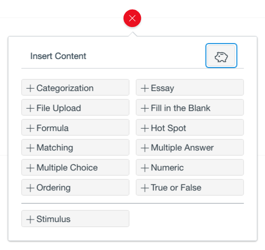
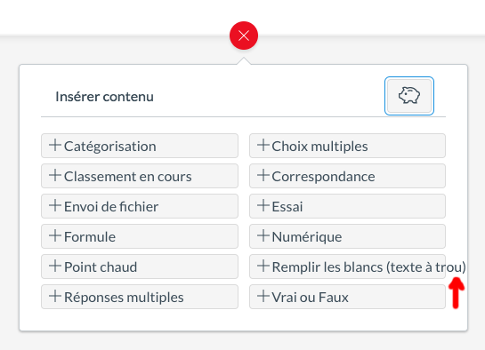
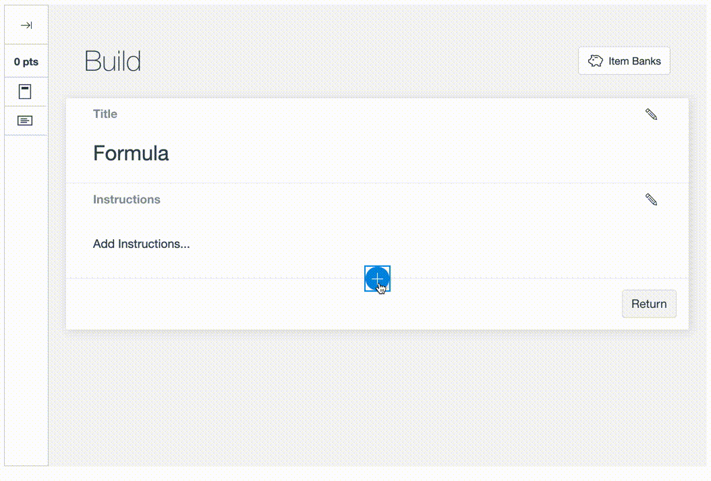

Does this JIRA ticket contain any red flags?



A: It depends

Intl.NumberFormat does the right thing for en-IN, but uses thousands
grouping for zh-CNIntl.NumberFormat handles this for basic number formatting$[____] or [____]%
"Questions 1, 2, and 3 are unanswered."
<ul> or <ol> instead
bank.sharedCount > 0
? `${t('Sharing')} (${bank.sharedCount})`
: t('+ Share')bank.sharedCount > 0
? t('Sharing { count }', { count: bank.sharedCount })
: t('+ Share')
`x`